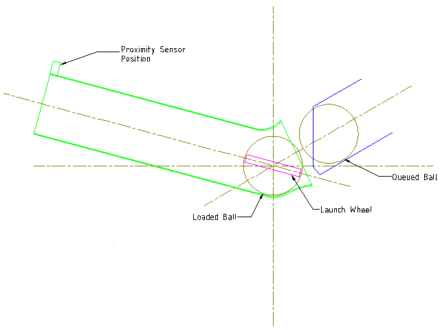

Ball Launcher
The ball launcher is essentially the core of the BallAroo, and it would be relativity simple in concept and design. The ball launcher will comprise of a simple tube design with pivot points mounted near the feed-end to allow changing of launch pitch. Elevation will be facilitated by stepper motor driving a pinion gear on a ring gear. On the feed-end of the launch tube, at least one high speed brush-less type DC motor fitted with a launcher wheel, will be mounted to one side of the tube, with the option of adding an additional motor if needed. Upon feed of the ball from the ball feed mechanism, the launcher wheels would launch the ball at the desired velocity. The velocity of the ball would be the direct result of the revolutions per minute (RPM) the launcher wheels are running at, which would be a speed determined by the user. This coupled to elevation of the launch tube would determine the range of the ball throw. To minimise power consumption, the launcher wheel/s would only spin up in preparation to launch and between ball launches, the ball launcher wheel/s would spin down. As a safety precaution, a proximity sensor will be fitted to the end of the launch tube to prevent launching of a ball when anything too close to the end of the tube. 